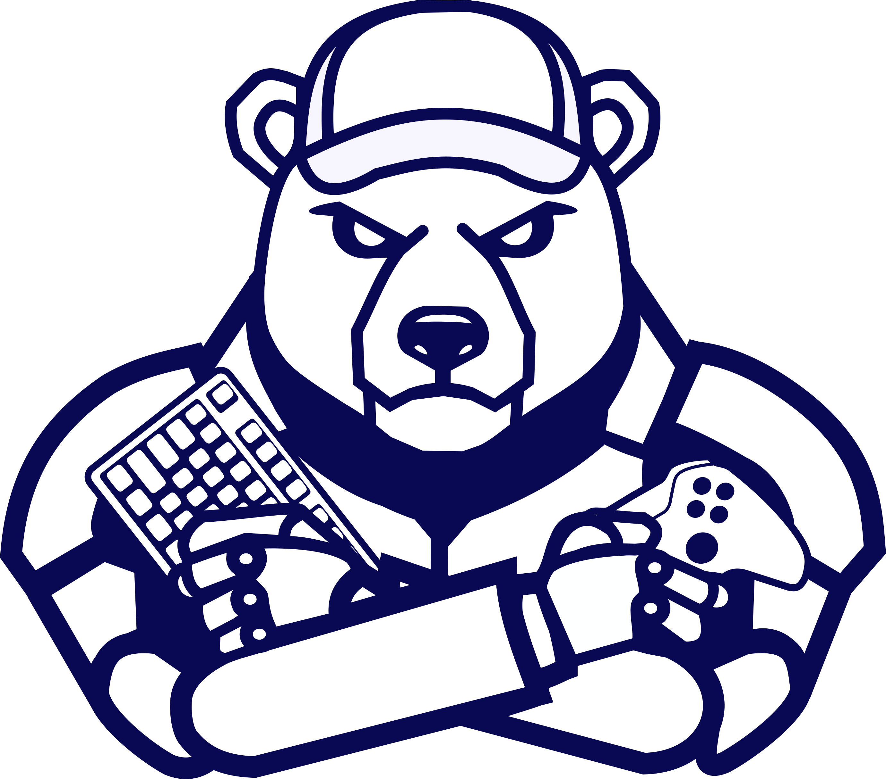

🎮
Créer des jeux
Ours Agile conçoit et développe ses propres jeux indépendants sur itch.io — en dehors de Steam et de Microsoft.

Créer, accompagner et partager autour du jeu vidéo.
Ours Agile conçoit et développe ses propres jeux indépendants sur itch.io — en dehors de Steam et de Microsoft.
Ateliers, formations et découvertes du jeu vidéo — l’Ours aime transmettre la magie du code et du fun.
Besoin d’un coup de patte pour ton jeu ? L’ours t’aide à coder, optimiser, finaliser et publier ton jeu avec sérénité.
Ours Agile est né le 1er avril 2021 — et non, ce n’est pas un poisson d’avril.
Depuis, l’ours code, teste, apprend, et partage avec la même philosophie : efficacité, propreté, ouverture.
Implanté à Angers, Ours Agile fait partie
des membres fondateurs de l’AJVA (Association du Jeu Vidéo
Angevin), une association qui fédère les créateurs locaux, favorise les rencontres, et aide à faire
grandir la scène vidéoludique régionale.
Aujourd’hui, l’ours participe au développement du jeu vidéo à Angers en formant, créant et stimulant les talents
locaux.
Il streame aussi régulièrement sur Twitch où il a
développé une incroyable communauté de créateurs et passionnés sur Discord.
N’hésitez pas à passer lui dire bonjour !
Pour les jeunes passionnés et les adultes, nous proposons des parcours exigeants pour apprendre à concevoir et coder, pas seulement à consommer.
Public : 12 - 99 ans | En présentiel
Le déclic créatif. En une journée, on ouvre un projet Unity existant, on le transforme en équipe, on comprend la logique et on repart avec son jeu sur clé USB ou en ligne sur itch.io.
Public : 16 - 99 ans | En présentiel / Fablab
Le sprint intensif. 7 jours pour concevoir un jeu de A à Z. Au programme : initiation au C#, modélisation 3D sur Blender, intégration de l'UI, de la physique et gestion de projet avec Hacknplan.
Format : 1 mois | Hybride ou Internet
Le grand plongeon dans l'algorithmie. Conçu pour ceux qui veulent une autonomie totale. On apprend à structurer et coder ses propres systèmes sans jamais dépendre de la béquille de l'IA.
Écris à l’ours pour parler d’un jeu, d’une idée ou d’un besoin de formation.